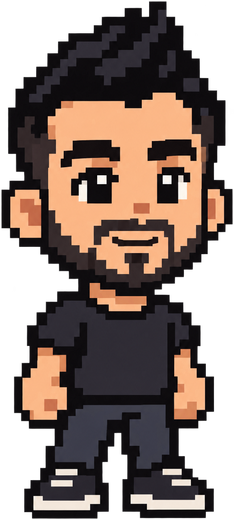

Stellar Creative Lab
Aug 2026 – Present
GenAI Pipeline TD
Permanent full-time
- Bring generative AI tools and workflows into how shows get made.
0 About
~ $ fastfetch

-----------
~ $ cat profile.txt
GenAI pipeline TD, bringing generative AI tools and workflows into how shows get made, after 15+ years in visual effects, many of them as an asset supervisor leading asset teams and the models, textures and look development for films and series, including The Mandalorian, House of the Dragon and Avatar: The Last Airbender.
Known for mentoring artists, coaching teams and teaching practical workflows, and for building supportive teams that deliver strong production results.
Outside the studio I build free, open-source apps, harlo and ComfyPilot among them, and teach ComfyUI and AI workflows on my YouTube channel, Arctic Latent.
1 Experience
~ $ cat experience
2 Apps
~/tools $ ls apps
Your coding agents in one native app: Claude Code and the harlo agent, with an iPhone app to follow and answer them. harlo.run
Install, run and keep ComfyUI up to date, with the right models, LoRAs and workflows for your GPU. github.com/ArcticLatent/ComfyPilot
3 Credits & more
~/film $ ls credits
# ep: the episodes I worked on. Full list: IMDb
~ $ cat skills
~ $ cat speaking
~ $ cat education
Postgraduate Degree, Seneca Polytechnic
Postgraduate Degree, Seneca Polytechnic
Bachelor of Arts, Istanbul Bilgi University